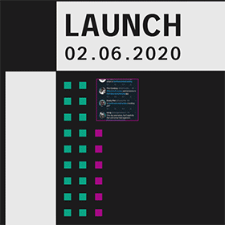
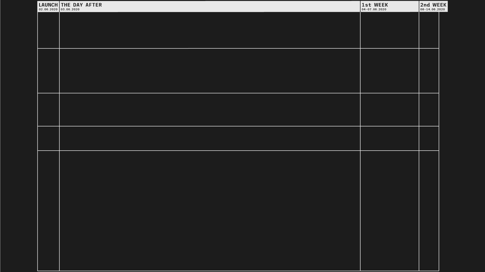
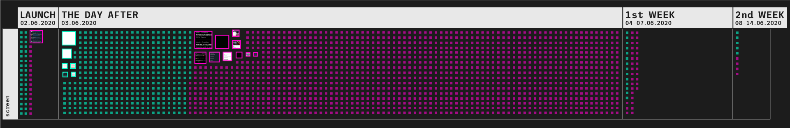
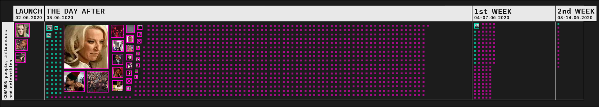
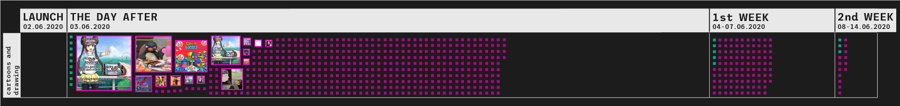
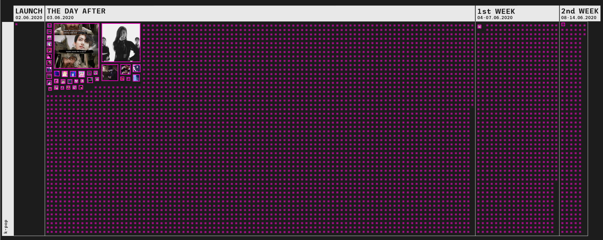
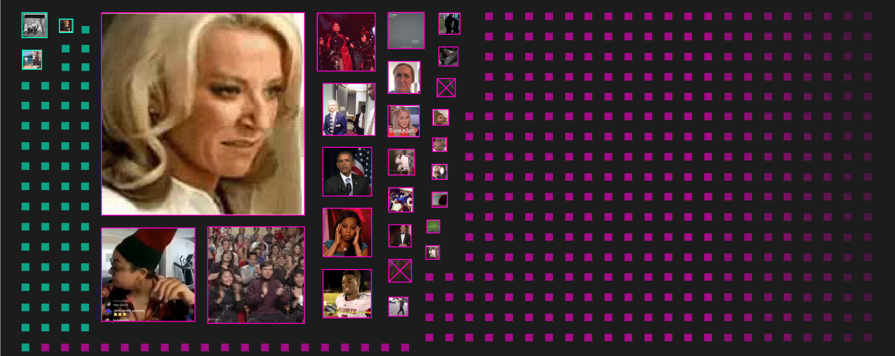
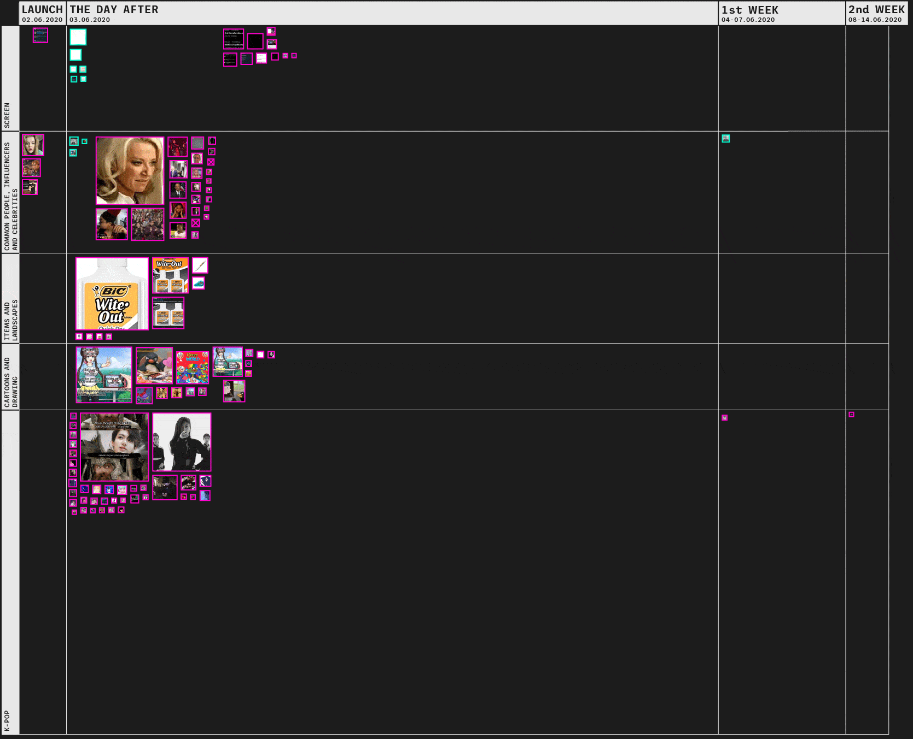
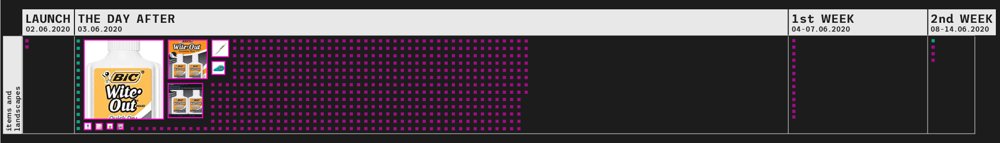

USERNAME
LIKES
RETWEETS
TEXT
USERNAME
LIKES
RETWEETS
TEXT
On June 2020 the #WhiteoutWednesday was created to oppose the #BlackOutTuesday, but the hashtag was quickly hijacked by BTS stans and Twitter was flooded with posts. During a takeover, images play an important role because they reinforce the mockery of the original meaning. The research studies visual content posted during the hijacking in order to identify recurrent and most popular features.
On June 2nd, the hashtag was launched and it’s the only day where posts related to the original hashtag are greater than those hijacked.
On June 3rd the number of posts shared peaked and the hashtag started trending, while from June 4th the posts decreased significantly. 
Over the two weeks analyzed, posts containing screenshots are the only ones that always refer to the original meaning of the hashtag. This is also the cluster that contains the biggest amount of posts referencing the original meaning of the hashtag. 
On launch day, posts depicting common people, influencers, and celebrities use only the hijacked hashtag. However, from the next day, posts supporting the original hashtag also appear. 
Posts portraying cartoon, fictional characters and drawing only appear from the second day, when they peak. 
The cluster of posts that influenced the most the hijacking of this hashtag is surely the onew related to the K-Pop world. 
Posts hijacking the hashtag are significantly higher than those using it with the original meaning. The take over was done both through content questioning white supremacy and supporting the BLM movement and through decontextualized topics that only served to flood and render the hashtag ineffective. 
Although Twitter was flooded with more than 9000 posts, only 1.25% of them became popular. These posts achieved a high level of engagement and set the trends for the contents. The remaining 98.75% reported a significantly lower level of engagement but made the hijack successful. 
The most popular posts started appearing mostly on the second day. A trend appears: images depicting white-outs spread during the hashtag hijacking and received many retweets and likes. 